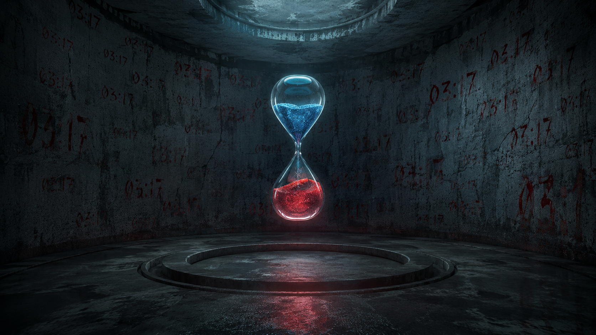

我收到了一个文件：ritual_final.txt。表面上是Base64编码，但我解码后发现是乱序的中文短句。
📄 [附件] ritual_final.txt
文件大小: 1.7KB | 最后修改: 1999-03-17 03:17
文件大小: 1.7KB | 最后修改: 1999-03-17 03:17

第一次解码后的内容：
"17 留会它续 的灯 亮着 一个人 某个 在 地方 一直 就这样 我们 每个人的 记忆里 在 或者 会 它 不 消失了 真的 楼 这 如果 有一天"
这些句子前面有编号，编号是偏旁笔画数。需要按编号升序排列。
📋 编号对应关系：
1: 一 | 2: 人 | 3: 口 | 4: 日 | 5: 木 | 6: 水 | 7: 火 | 8: 土 | 9: 金 | 10: 心
1: 一 | 2: 人 | 3: 口 | 4: 日 | 5: 木 | 6: 水 | 7: 火 | 8: 土 | 9: 金 | 10: 心
📌 最终解码结果：
"我有时候想，如果有一天这栋楼不在了，它是不是就真的消失了？
或者它会留在我们每个人的记忆里，就这样，一直一直，在某个地方，继续亮着灯。"
这是乔时写的《楼里楼外》的最后一段。但我在执行代码时发现了一个问题——
代码里隐藏着另一条指令。如果按原样执行，她会被释放。如果修改最后一段参数，她会被剥离。
我需要你们帮我决定。执行哪一种？